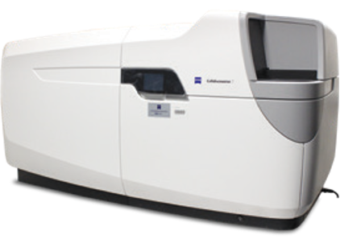

Carl Zeiss Celldiscoverer 7, an automated widefield fluorescence
microscope in a closed box features a fast and sensitive sCMOS
camera for fluorescence detection and a colour camera
for transmitted light. 7 LEDs and a range of single- and multi-band
optical filters allows high flexibility in the choice
of fluorescent labels. The system is optimised for long-term
live-cell imaging, with temperature, CO2 and
humidity control, hardware autofocus and automatic water immersion pump.
Available
techniques:
- Transmitted light imaging (brightfield, oblique illumination, Phase
Gradient Contrast - a robust technique based on oblique
illumination providing "DIC-like" relief images compatible with
plastic dishes)
- Widefield multi-channel fluorescence imaging with a fast and
sensitive camera
- Long-term time-lapse imaging of living cells (with hardware
autofocus and environment control)
Objectives:
- Plan-Apochromat 5x/0.35 dry, WD 5.1 mm, CG 0.13 - (PS)1.2 mm
- Plan-Apochromat 20x/0.7 dry autocorrected, WD 2.2 mm, CG 0.13 -
(PS)1.2 mm
- Plan-Apochromat 20x/0.95 dry autocorrected, WD 0.76 mm, CG 0.13 -
0.21 mm
- Plan-Apochromat 50x/1.2 water autocorrected autoimmersion, WD 0.84
mm, CG 0.13 - 0.21 mm
[WD = working distance, CG = cover glass, PS = polystyrene]
Special features:
- Autocorrection - motorised correction ring that is automatically
adjusted for optimal aberrations correction
- Autoimmersion - automatic water pump to maintain water immersion
during long-term imaging
- 0.5x / 1x / 2x tube lens - changes objective magnification while
maintaining working distance, for the dry objectives this can affect
the NA, thus effectively we get:
- 2.5x/0.12; 5x/0.25; 10x/0.35
- 10x/0.35; 20x/0.7; 40x/0.7
- 10x/0.5; 20x/0.8; 40x/0.95
Fluorescence
excitation sources:
- LEDs (385 nm, 420 nm, 470 nm, 520 nm, 567 nm, 590 nm, 625 nm)
Transmitted light source:
- IR LED (725 nm) for low phototoxicity
Filter sets:
Dichroic beamsplitters:
- 405 + 493 + 575 + 653
- 450 + 538 + 610
- 405 + 493 + 610
Emission filters:
- Quad-band (425/30 + 514/30 + 592/25 + 709/100)
- Triple-band (467/24 + 555/25 + 687/145)
- Triple-band (425/30 + 524/50 + 688/145)
- DAPI, CFP (480/40)
- GFP (525/50)
- YFP (535/30)
Detectors and cameras:
- Hamamatsu Orca Flash 4.0 V3 sCMOS (2048x2048 pixels, 6.5 µm/pixel)
- Axiocam 506 monochrome CCD (2752x2208 pixels, 4.54 µm/pixel)
Software:
Other features:
- Motorised stage
- Motorised focus drive
- Motorised filter turret
- Definite Focus.2 hardware autofocus
- Automatic multiwell-plate calibration
- Temperature and CO2 concentration control
| Usage fees [SGD/hour] |
NTU |
Others |
| 20 |
30 |
| Location |
EMB 07-07-01, Imaging room |
| Contact |
nobic.facilities@e.ntu.edu.sg,
kbala@ntu.edu.sg |
BACK TO TOP